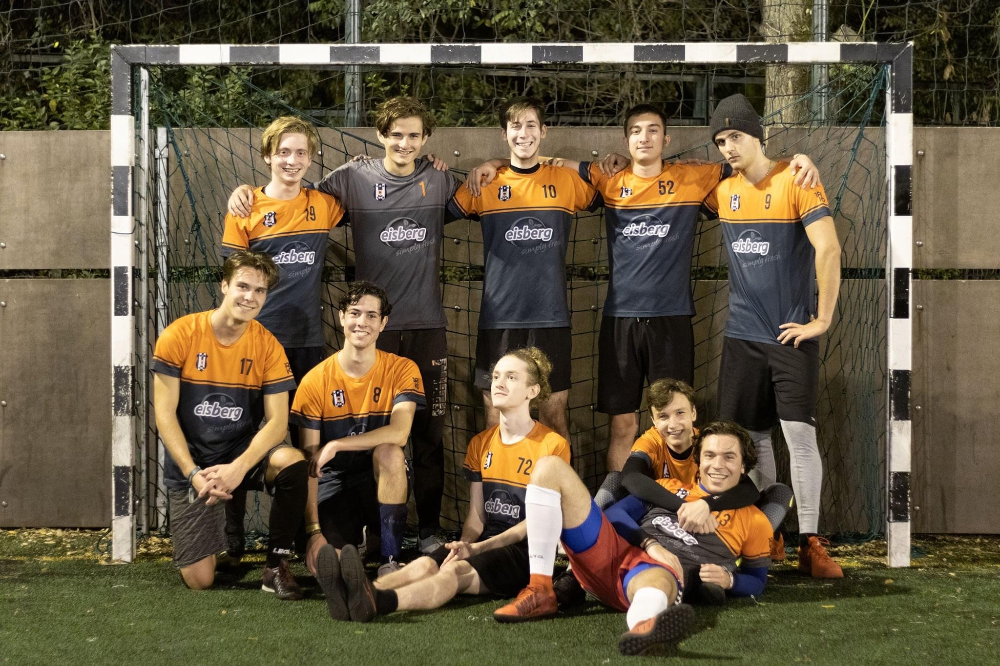

Foci:
Mint már említettem, gimnáziumi barátaimmmal két éve elkezdtünk amatőr tornákra járni, amely eleinte nehézkesen indult, ugyanis a játék színvonala elmaradt az ellenfeleinktől, így nem igazán születtek jó eredmények, ami nem volt jó hatással a motivációnkra. Azonban mostanra már átlendültünk ezen a nehéz időszakon, és már kézzel fogható eredmények kapujában állunk, ami határozottan jó érzés. Emellett persze a foci remek formája a kikapcsolódásnak, ilyenkor teljesen elfelejtem a külvilág problémáit, és teljes mértékben a pályán vagyok (fejben is).
A csapattal részt veszünk a BME által szervezett Villanyfényes bajnokságon, az idei az első teljes szezonunk (bár már nyáron is részt vettünk, de az nem rendelkezik semmilyen súllyal), és jelenleg a tabella első helyén állunk (az utolsó forduló napján írom ezt). Így tehát bátran jelenthetm ki, hogy a csapat nagyot lépett előre az elmúlt évekhez képest.
Íme egy kép illusztrációul:

Egyéb kikapcsolódási formák:
Ha lehetőségem van rá, szeretek találkozni a gimnáziumi barátaimmal, de mivel rendszerint mindenki időszűkében van, sajnos csak viszonylag ritkán tud összegyűlni a társaság. Épp ezért, azok az alkalmak, amikor sikerül megszervezni egy találkozót, extra súllyal bírnak, és méginkább felértékelődnek.
Végül de nem utolsó sorban néha szeretek leülni sorozatot vagy filmet nézni, könyvet olvasni, focit vagy Forma-1-et nézni. Ez talán a leghétköznapibb módja a kikapcsolódásnak, de ettől még nem lebecsülendő.